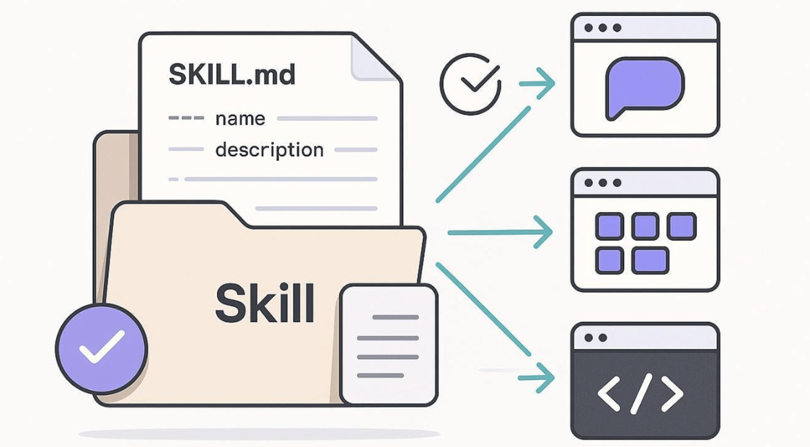
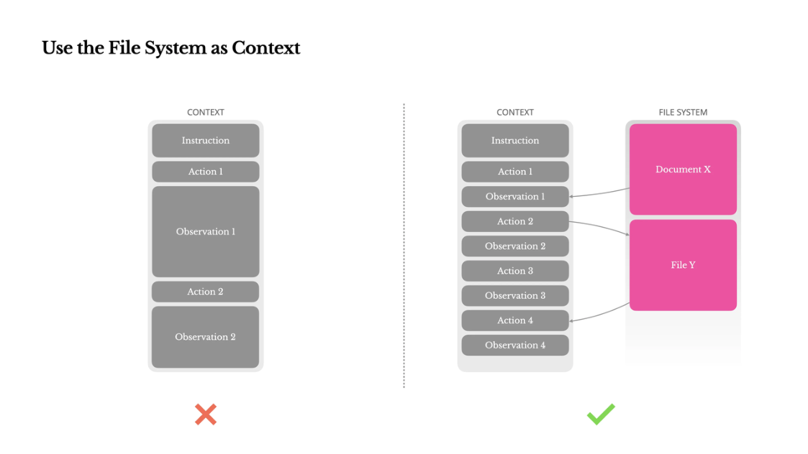
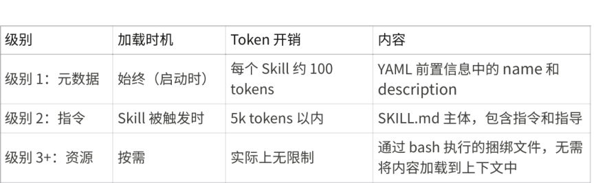
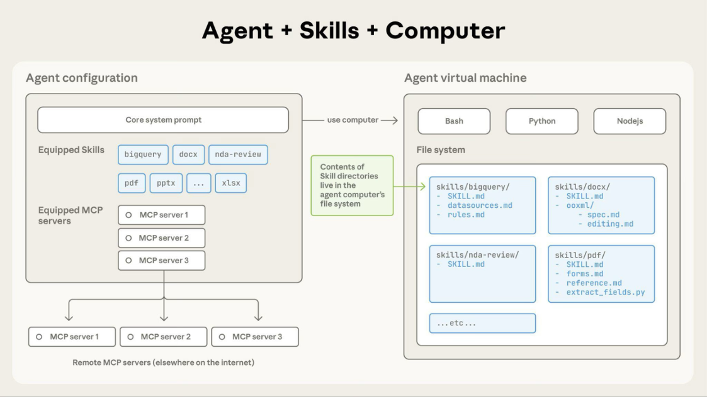
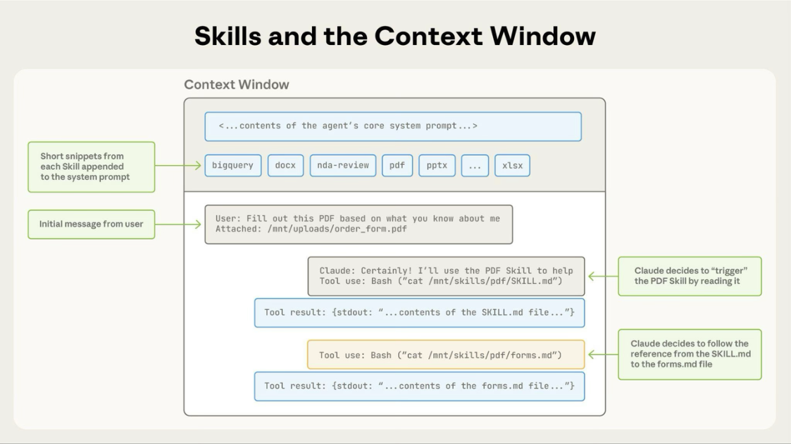

Skills
什么是 Skill
在 AI Agent 系统中，Skill（技能）可以理解为对可复用能力的一种抽象封装。它描述的是 Agent 能够 完成的一类具体任务，而不是某一次具体执行。

换句话说，Skill 关注的是做什么，而不是怎么做。例如，查询天气、发送邮件、生成报告都可以被抽 象为独立的 Skill。这些能力一旦被定义，就可以被不同的 Agent 重复使用，从而避免重复开发。 从系统设计的角度来看，Skill 是连接语言模型与实际执行能力之间的一层中间抽象。它既对上承接 LLM 的自然语言理解能力，又对下衔接具体的工具调用或业务逻辑执行。
为什么需要 Skill
在没有 Skill 抽象的早期 Agent 系统中，能力通常直接写在 Prompt 或代码逻辑里。这种方式在简单场 景下尚可使用，但随着系统复杂度提升，会逐渐暴露出明显问题。
首先是能力耦合严重。很多逻辑被硬编码在 Prompt 中，导致一旦需要修改某个功能，就必须调整整 个 Prompt 或 Agent 行为，维护成本极高。其次是复用性差，不同 Agent 即使具备相似能力，也需要 重复实现。最后是扩展性不足，新能力的加入往往意味着系统结构的调整。

引入 Skill 之后，这些问题得到明显改善。每一种能力被拆分为独立模块，可以被多个 Agent 共享和调 用。同时，系统可以通过动态加载或组合 Skill 来完成更复杂的任务，从而显著提升整体的灵活性和可 扩展性。
Skill 的基本结构
从实现角度来看，一个 Skill 本质上是一个结构化的能力定义。它通常包含名称、描述、输入输出结构 以及具体的执行逻辑。
名称用于唯一标识一个 Skill，而描述则用于告诉模型在什么情况下应该使用该能力。输入和输出通常 采用结构化格式（如 JSON Schema），以便与 Function Calling 或 Tool 调用机制兼容。执行逻辑则 可以是调用外部 API、本地函数，或是触发一段复杂流程。
例如，一个“查询天气”的 Skill，会定义输入为城市名称，输出为温度和天气状况，而执行逻辑则可 能是调用天气 API。通过这种方式，能力被标准化封装，使得模型可以在理解用户意图后自动选择并调 用合适的 Skill。
Skill 内容类型
Skills 可以包含三种类型的内容，每种在不同时间加载：
级别 1：元数据（始终加载）
内容类型：指令。Skill 的 YAML 前置信息提供发现信息：
1---name: pdf-processing
2description: Extract text and tables from PDF files, fill forms, merge
documents. Use when working with PDF files or when the user mentions PDFs,
forms, or document extraction.---
Agent在启动时加载此元数据并将其包含在系统提示中。这种轻量级方法意味着您可以安装许多 Skills 而不会产生上下文开销；Agent 只知道每个 Skill 的存在及其使用时机。
级别 2：指令（触发时加载）
内容类型：指令。SKILL.md 的主体包含程序性知识：工作流程、最佳实践和指导：
1# PDF Processing
2## Quick startUse pdfplumber to extract text from PDFs:
3```python
4import pdfplumber
5with pdfplumber.open("document.pdf") as pdf:
6 text = pdf.pages[0].extract_text()
7```
8For advanced form filling, see [FORMS.md](FORMS.md).
当您的请求与某个 Skill 的描述匹配时，Agent 通过 bash 从文件系统读取 SKILL.md。只有在此时，这 些内容才会进入上下文窗口。
级别 3：资源和代码（按需加载）
内容类型：指令、代码和资源。Skills 可以捆绑额外的材料：
1 pdf-skill/ 2 ├── SKILL.md (main instructions) 3 ├── FORMS.md (form-filling guide) 4 ├── REFERENCE.md (detailed API reference) 5 └── scripts/ 6 └── fill_form.py (utility script)
指令：额外的 markdown 文件（FORMS.md、REFERENCE.md），包含专门的指导和工作流程 代码：可执行脚本（fill_form.py、validate.py），Agent 通过 bash 运行；脚本提供确定性操作而不 消耗上下文
资源：参考材料，如数据库模式、API 文档、模板或示例
Agent 仅在被引用时才访问这些文件。文件系统模型意味着每种内容类型都有不同的优势：指令用于 灵活指导，代码用于可靠性，资源用于事实查询。

渐进式披露确保在任何给定时间只有相关内容占用上下文窗口。
与 Tool、Function 的关系
在实际系统中，Skill 往往与 Tool 和 Function 一起出现，但三者的职责是不同的。 Skill 表示一种能力本身，例如“查询天气”。Function 是这个能力的调用接口，例如一个具体的函 数 get_weather(city) 。而 Tool 则是最终执行任务的实体，比如一个外部天气 API 或数据库服 务。
可以这样理解：Skill 定义了“要做什么”，Function 定义了“如何调用”，而 Tool 负责“真正执 行”。三者共同构成了 Agent 的执行链路。 这种分层设计的好处在于，每一层都可以独立演进。例如，可以在不改变 Skill 定义的情况下替换底层 Tool，也可以在不影响 Tool 的情况下优化 Function 的参数结构。
Skill 的分类
从能力类型来看，Skill 可以分为信息类、操作类、生成类和推理类。信息类 Skill 主要用于查询和检索 数据，例如查询订单或获取天气；操作类 Skill 则涉及实际执行行为，例如发送邮件或提交请求；生成 类 Skill 通常依赖模型生成内容，例如写作或总结；推理类 Skill 则更偏向复杂决策和规划。 从复杂度角度来看，Skill 又可以分为原子技能和组合技能。原子技能通常只完成一个简单操作，例 如“查询订单”；而组合技能则由多个原子技能构成，例如“处理客户投诉”，可能包含查询订单、 分析问题以及生成回复等多个步骤。 这种分层分类方式，有助于在复杂系统中进行能力拆分和复用。
Skill 的执行流程
当用户发起请求时，Agent 会首先对输入进行理解，识别用户的意图。在此基础上，系统会从已有的 Skill 中选择最合适的一项或多项。
接下来，Agent 会根据 Skill 的输入定义构造参数，并通过 Function Calling 的方式触发调用。 Function 再进一步调用底层 Tool 或服务完成实际执行，并返回结果。 最后，Agent 会结合返回结果与上下文，生成最终的自然语言回复给用户。
整个过程中，Skill 起到的是“能力路由”的作用，它将自然语言需求转化为可执行操作，是 Agent 能 够真正“做事”的关键桥梁。
Skill 的设计原则
在设计 Skill 时，一个重要原则是单一职责，即每个 Skill 只负责完成一个明确的任务。这有助于提高 复用性，也便于后续组合。 同时，Skill 应该保持高内聚、低耦合。内部逻辑应尽量完整，而不依赖其他 Skill 才能工作。否则会导 致调用链复杂，增加系统不稳定性。 此外，Skill 的描述需要清晰准确，因为模型在选择 Skill 时很大程度依赖这些描述信息。如果描述模 糊，可能会导致错误调用。
输入和输出尽量采用结构化格式，这不仅有助于提升调用稳定性，也便于与自动化系统集成。最后， Skill 应具备良好的可组合性，以支持更复杂任务的构建。
Skills 架构
Skills 在代码执行环境中运行，Agent 在该环境中拥有文件系统访问、bash 命令和代码执行能力。可 以这样理解：Skills 作为目录存在于虚拟机上，Agent 使用与在计算机上浏览文件相同的 bash 命令与 它们交互。

Agent 如何访问 Skill 内容：
当 Skill 被触发时，Agent 使用 bash 从文件系统读取 SKILL.md，将其指令带入上下文窗口。如果这些 指令引用了其他文件（如 FORMS.md 或数据库模式），Agent 也会使用额外的 bash 命令读取这些文
件。当指令提到可执行脚本时，Agent 通过 bash 运行它们并仅接收输出（脚本代码本身永远不会进入 上下文）。
这种架构实现了什么：
按需文件访问：Agent 只读取每个特定任务所需的文件。一个 Skill 可以包含数十个参考文件，但如果 您的任务只需要销售模式，Agent 只加载那一个文件。其余文件保留在文件系统上，消耗零 tokens。 高效脚本执行：当 Agent 运行 validate_form.py 时，脚本的代码永远不会加载到上下文窗口 中。只有脚本的输出（如"验证通过"或特定错误消息）消耗 tokens。这使得脚本比让 Agent 即时生成 等效代码要高效得多。
捆绑内容无实际限制：因为文件在被访问之前不消耗上下文，Skills 可以包含全面的 API 文档、大型数 据集、大量示例或您需要的任何参考材料。未使用的捆绑内容不会产生上下文开销。 这种基于文件系统的模型使渐进式披露得以实现。Agent 浏览Skill 就像查阅入职指南的特定章节一 样，精确访问每个任务所需的内容。
示例：加载 PDF 处理 skill
- 以下是 Agent 加载和使用 PDF 处理 skill 的过程：
-
启动：系统提示包含：
PDF Processing - Extract text and tables from PDF files, fill forms, merge documents -
用户请求："提取这个 PDF 中的文本并总结"
-
Agent 调用：
bash: read pdf-skill/SKILL.md→ 指令加载到上下文中 -
Agent 判断：不需要表单填写，因此不读取 FORMS.md
-
Agent 执行：使用 SKILL.md 中的指令完成任务

该图展示了：
-
默认状态，系统提示和 skill 元数据已预加载
-
Agent 通过 bash 读取 SKILL.md 触发 skill
-
Agent 根据需要可选地读取额外的捆绑文件，如 FORMS.md
-
Agent 继续执行任务
这种动态加载确保只有相关的 skill 内容占用上下文窗口。
Skill 的进阶能力
在更复杂的系统中，Skill 不仅仅是简单的能力封装，还会演化出更多高级机制。 例如，可以引入 Skill Router，根据上下文自动选择最合适的 Skill；也可以通过 Skill Composition 将 多个技能组合成复杂流程。此外，还可以构建 Skill Registry，对所有技能进行统一管理，并支持动态 加载。
在一些高级 Agent 系统中，甚至会为 Skill 增加记忆能力，用于记录历史调用情况，从而优化后续决 策。 这些机制的引入，使得 Agent 系统逐渐具备类似“操作系统”的能力，可以灵活调度各种功能模块。
总结
Skill 是 AI Agent 系统中的核心能力抽象层，它将复杂的功能模块化、标准化，使得系统具备良好的复 用性与扩展性。
通过 Skill，语言模型不再只是生成文本，而是能够驱动真实世界的操作。也正因为如此，Skill 成为了 连接“理解”与“行动”的关键桥梁。
从工程角度来看，一个设计良好的 Skill 体系，往往决定了整个 Agent 系统的上限。
拓展阅读
https://platform.Agent.com/docs/zh-CN/agents-and-tools/agent-skills/overview